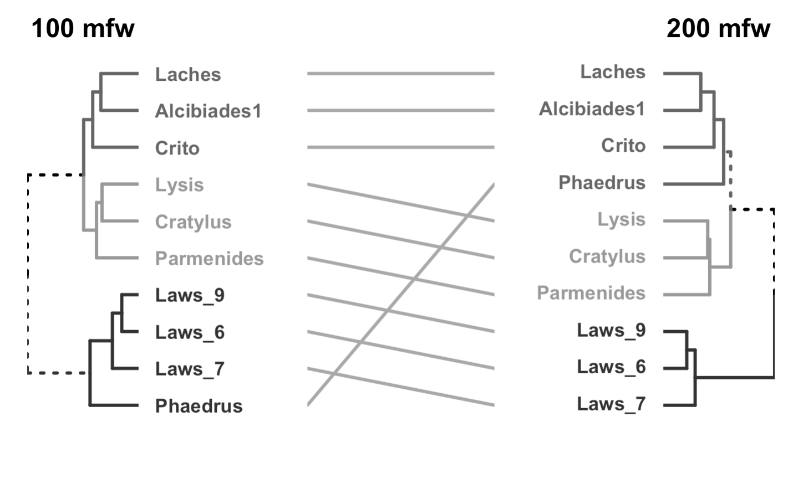
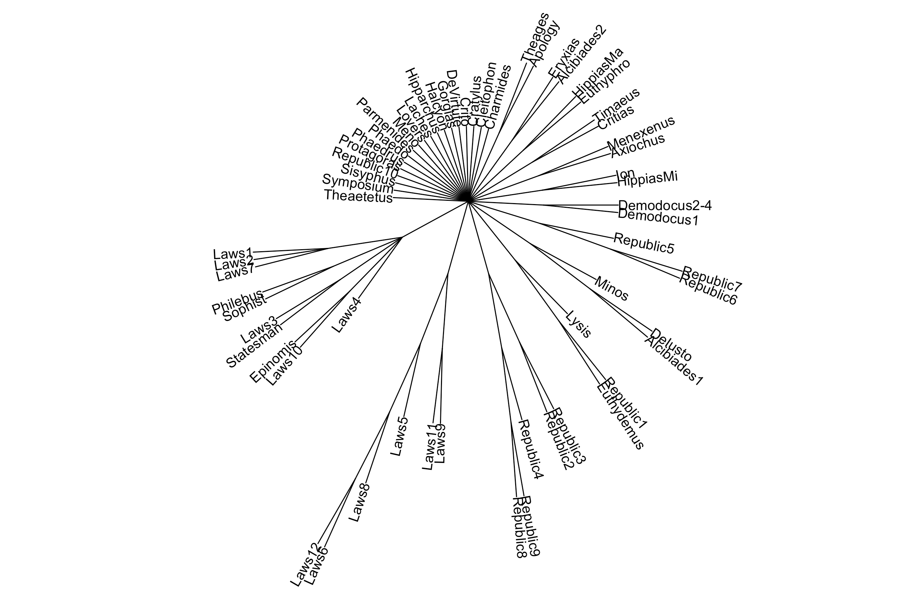
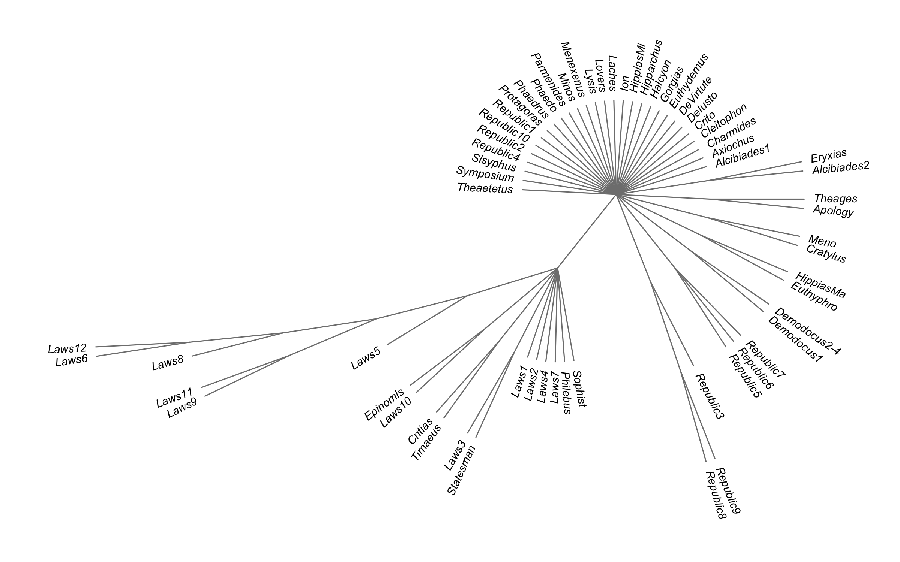
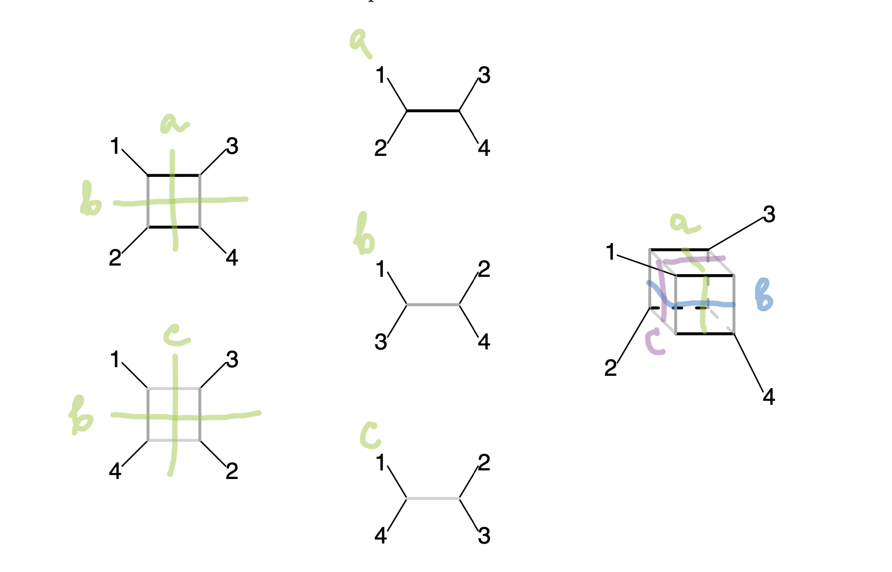
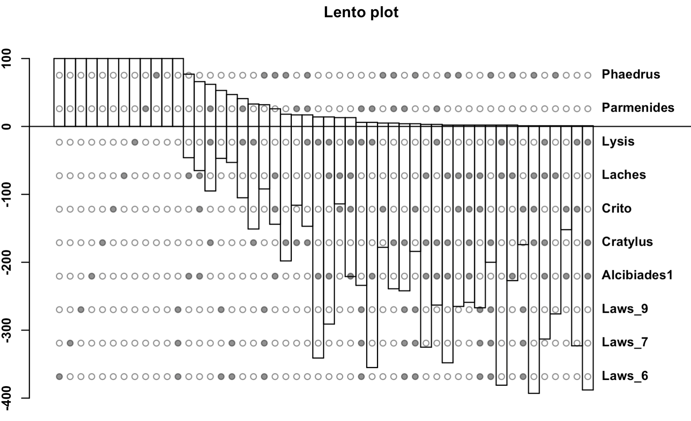
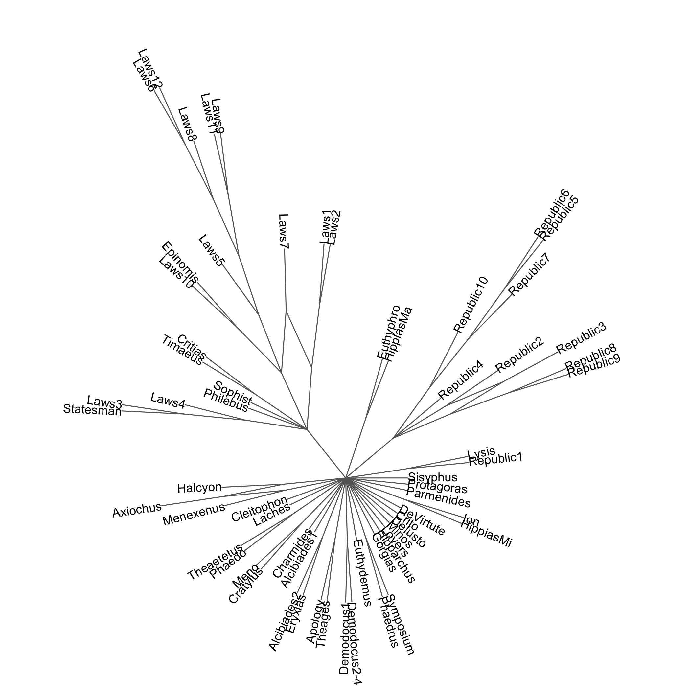
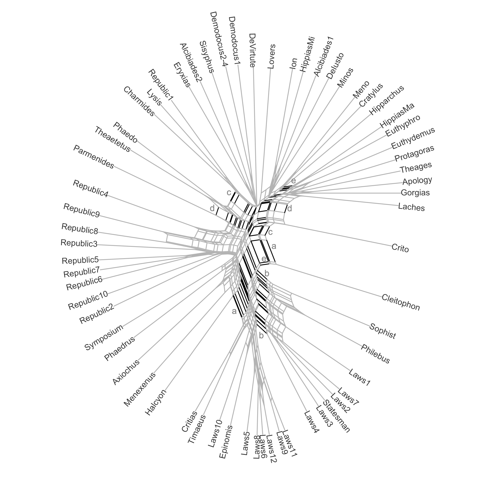
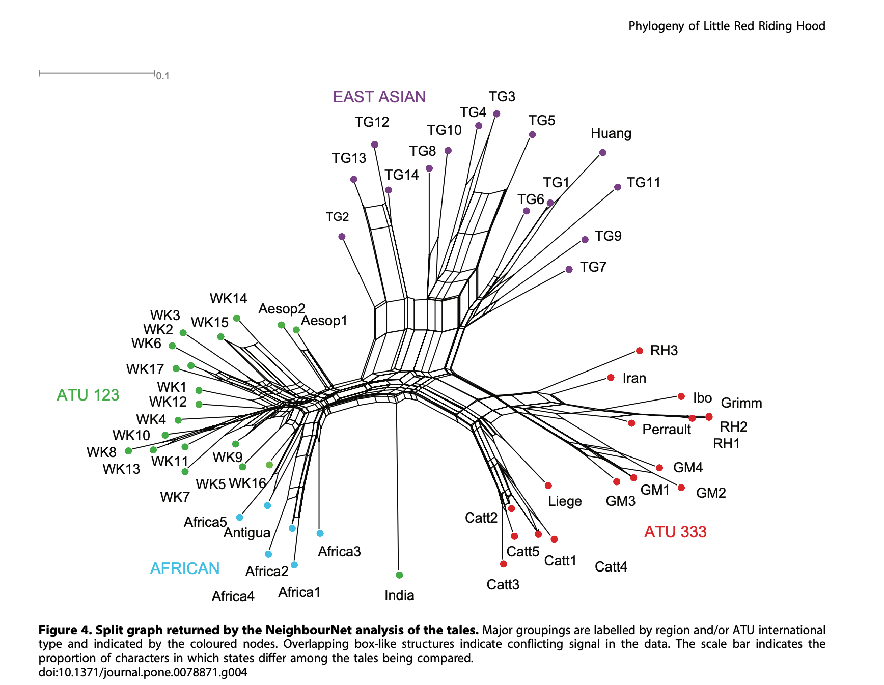
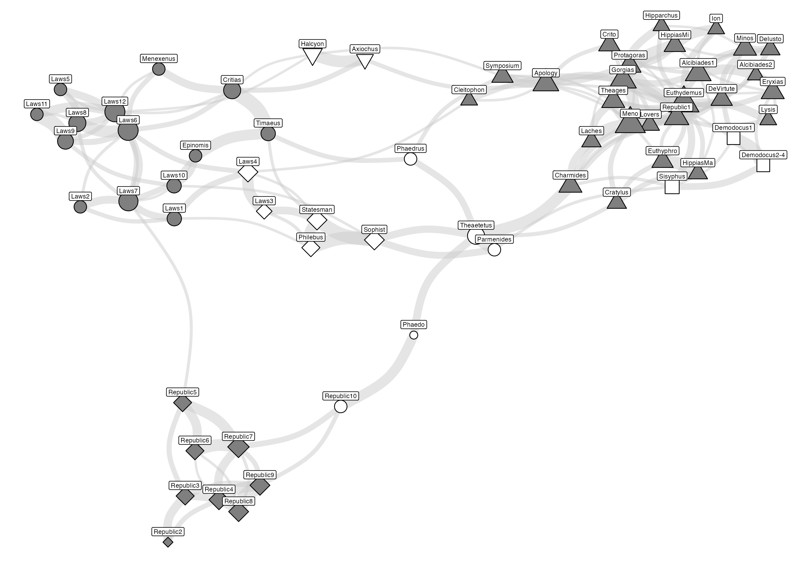

Dubia et spuria в платоновском корпусе
Стилометрический аспект
29 марта 2025 г.
Ссылка на презентацию
Предыстория
- Стилометрия использовалась для:
- построения сравнительной хронологии;
- решения вопроса о подлинности диалогов;
- О составе корпуса см. подробнее “Pseudoplatonica: проблемы происхождения и датировки” (Платоновские исследования 2024)
- Об истории стилометрических исследований см. видео “Стилометрия” (лекция 2024)
Критика стилометрии
- И то, и другое привело к спорным результатам
- “три группы” – из-за допущения о линейности и др.
- для отвержения авторства – недостаточное и не необходимое условие.
- Об ограничениях метода подробнее см. “Блеск и нищета стилометрии” (Философия. Журнал ВШЭ 2024)
- Краткая сводка: “Вычислить Платона” (IQ.HSE 2024)
Успех стилометрии
- Несмотря на критику, деление на три группы закрепилось:
- унитаристы (Шлейермахер, Фридлендер, Кан)
- эволюционисты (Тейлор, Кромби, Гатри и др.)
- атомисты (Купер)
Неустойчивость ветвей

Что с этим делать?
- ответ знают биоинформатики (конфликтующие сигналы в генах)
- –Ω–∞–¥–æ –ø–æ—Å—Ç—Ä–æ–∏—Ç—å –º–Ω–æ–≥–æ –¥–µ—Ä–µ–≤—å–µ–≤ üå≤üå≥üå¥
- а где же их взять? набутстрапить!
- (дальше немного терминологии)
Бутстрап

Консенсусные деревья
Консенсусное дерево в Stylo
Консенсусное дерево, построенное в stylo (100–450 mfw, «вюрцбургская дельта»).
Консенсусное дерево Phangorn
Консенсусное дерево, построенное в phangorn (300 mfw, «вюрцбургская дельта»).
Конфликтующие сигналы
E. Paradis. Analysis of Phylogenetics and Evolution with R
Диаграмма Ленто
Диаграмма Ленто
Консенсусная сеть: ConsensusNet
Консенсусная сеть phangorn.
Алгоритм NeighborNet
 ## Пример из другой области

Важная оговорка
Рассмотренные филогенетические методы (консенсусные сети, консенсусные деревья и neighborNet) ничего не говорят о происхождении одного текста от другого. Филограмма, полученная дистанционными методами, не отражает эволюционный процесс, а показывает степень дивергенции таксонов.
Это значит, что neighborNet не делает никаких допущений о происхождении, а показывает то, что называют «конфликтующими сигналами». В биологии это рекомбинация, гибридизация и т.п., а в гуманитарных науках — жанровые и диалектные особенности, отношения подражания, заимствования и все то, что способно влиять на результат классификации текстов, помимо авторства.
Пример из антропологии

Консенсусная сеть Stylo
Консенсусная сеть stylo.
Еще пример на других данных

Что бы это все значило?
- результаты, полученные разными методами, в целом похожи
- устойчиво соседство “Законов”, “Тимея-Крития”, “Филеба”, “Софиста”, “Политика”
- устойчиво соседство книг 2-9 “Государства”
- spuria отчасти перемешивается с предположительно “ранними” диалогами
Ссылки
- репозиторий проекта: https://github.com/locusclassicus/plato_new_model_2024
- тг-канал: @Rantiquity